4130B20 POWER STEERING PUMP R R
- Path
- Procedures > 41 STEERING UNIT > 4130 POWER STEERING > 4130B POWER STEERING HYDRAULIC SYTEM > 4130B20 POWER STEERING PUMP R R
- Kind
- repair procedure (removal / refitting; the operation number is the code)
- Applies to
- all engines; all production periods
- Interactive page
- https://sloeber94.github.io/elrnDB-aGt/en/#/125001409
Applies to: engines: 1.8 T.SPARK, 2.0 JTS; all production periods
 Removing
Removing
 Refitting
RefittingPosition the vehicle on the ramp
Proceed with removal
Op. 1016A40 IGNITION COIL COVER ON CYLINDER HEAD- R+R
Proceed with removal
1. Disconnect the the delivery hose to the power assisted steering box from the power steering pump.
Op. 4130B10 POWER STEERING FLUID RESEVOIR R R
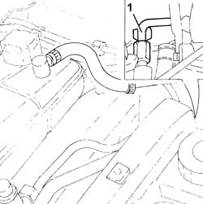
Applies to: engines: 1.8 T.SPARK, 2.0 JTS; all production periods
Release the timing sensor wiring from the collar on the protection.
Undo the bolts and remove the protection.
Proceed with removal
Op. 4450B04 RIGHT FRONT WHEEL R R
Proceed with removal
Proceed with removal
Op. 7055B66 ENGINE COMPARTMENT DUST SHIELD PROTECTION IN RIGHT FRONT WHEEL ARCH - R.R.
Proceed with removal
1. Keep the pump shaft secured and undo the bolts (1a) and remove the power steering pump pulley (1b).
Op. 7055B54 UNDER-ENGINE GUARD - R R
2. Undo the bolts (2a) and remove the power steering pump (2b).
Op. 1092G10 SINGLE ENGINE BELT R R
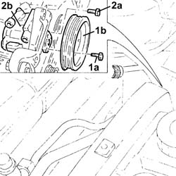
Applies to: engines: 1.8 T.SPARK, 2.0 JTS; all production periods
Refitting
RemovingPlace the power assisted steering pump back in its housing and fix it tightening the bolts to the recommended torque.
 | Fastening | Component | Ø | Value (daNm) |
|---|---|---|---|---|
- | - | - | - | - |
Place the power assisted steering pump pulley back in its housing and tighten the bolts while keeping the pump shaft secured.
| Fastening | Component | Ø | Value (daNm) |
|---|---|---|---|---|
- | - | - | - | - |
Proceed with refitting
Op. 1092G10 SINGLE ENGINE BELT R R.
Proceed with refitting
Op. 7055B54 UNDER-ENGINE GUARD - R R.
Proceed with refitting
Op. 7055B66 ENGINE COMPARTMENT DUST SHIELD PROTECTION IN RIGHT FRONT WHEEL ARCH - R.R..
Proceed with refitting
Op. 4450B04 RIGHT FRONT WHEEL R R.
Place the protection back in its housing and secure it using the bolts.
Secure the timing sensor wiring using the collar on the protection.
Connect the supply pipe to the power assisted steering box to the power assisted steering pump and tighten the connector to the recommended torque.
| Fastening | Component | Ø | Value (daNm) |
|---|---|---|---|---|
- | Connector | PIPE BTWN PUMP + POWER STEERING BOX | M16 | (Power assisted steering pump side) 4.5 ÷ 5.5 |
Proceed with refitting
Op. 4130B10 POWER STEERING FLUID RESEVOIR R R.
Proceed with refitting
Op. 1016A40 IGNITION COIL COVER ON CYLINDER HEAD- R+R.
Proceed with refitting
Op. 0010T71 POWER STEERING FLUID CHECK LEVEL AND TOP UP IF NECESSARY.
Remove the car from the ramps.
Applies to: engines: 3.2 V6; all production periods
Removing
RefittingPosition the vehicle on the ramp
Ensure that the ignition key is in the OFF position, then disconnect the negative battery terminal (-).
Name | Connector | |
|---|---|---|
- | Battery |
Drain the power steering fluid from the reservoir using a suitable syringe.
Proceed with removal
Op. 4450B04 RIGHT FRONT WHEEL R R
Proceed with removal
Proceed with removal
Op. 7055B64 LH OR RH REFLECTOR(ONE) ON REAR BUMPERS - R R
Proceed with removal
Proceed with removal
Op. 1092G10 SINGLE ENGINE BELT R R
Proceed with removal
1. Undo the connector (1a) and disconnect the delivery pipe from pump to power steering box (1b), pump side.
Op. 7055B54 UNDER-ENGINE GUARD - R R
2. Undo the connector (2a) and disconnect the power steeing intake pipe from the fluid reservoir pipe (2b), power steering pump side.
3. Undo bolts (3a) and remove power steering pump (3b)
Op. 1080B92 LEFT UPPER LAMBDA SENSOR R R
Op. 1076A70 HEAT SHIELD FOR LEFT CATALYTIC PRECONVERTER R R
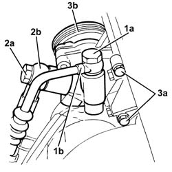
Applies to: engines: 3.2 V6; all production periods
Refitting
Removing1. Refit the power steering pump (1a) in its seating and tighten its bolts (1b) to the specified torque.
| Fastening | Component | Ø | Value (daNm) |
|---|---|---|---|---|
1b | Bolt | POWER STEERING PUMP | M8 | (Support side) 2.3 ÷ 2.8 |
2. Connect the power steering pump intake pipe from the the power steering reservoir (2a), power steering pump side and tighten the connector (2b) to the specified torque.
| Fastening | Component | Ø | Value (daNm) |
|---|---|---|---|---|
2b | - | - | - | - |
3. Connect the supply pipe from the power assisted steering pump (3a), power steering pump side and tighten the connector (3b) to the recommended torque.
| Fastening | Component | Ø | Value (daNm) |
|---|---|---|---|---|
3b | Connector | PIPE BTWN PUMP + POWER STEERING BOX | M16 | (Power assisted steering pump side) 4.6 ÷ 5.5 |
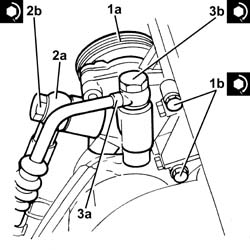
Applies to: engines: 3.2 V6; all production periods
Proceed with refitting
Op. 1076A70 HEAT SHIELD FOR LEFT CATALYTIC PRECONVERTER R R.
Proceed with refitting
Op. 1080B92 LEFT UPPER LAMBDA SENSOR R R.
Proceed with refitting
Op. 7055B54 UNDER-ENGINE GUARD - R R.
Proceed with refitting
Op. 1092G10 SINGLE ENGINE BELT R R.
Proceed with refitting
Op. 7055B64 LH OR RH REFLECTOR(ONE) ON REAR BUMPERS - R R.
Proceed with refitting
Op. 4450B04 RIGHT FRONT WHEEL R R.
Connect the negative (-) battery terminal
Fill the power steering circuit with the recommended fluid.
Type | Component | Name | Qty. | |
|---|---|---|---|---|
- | Fluid [l] | HYDRAULIC POWER ASSISTED STEERING SYSTEM | TUTELA GI/A | 1.2 |
Bleed the power steering system as described below
With the front wheels raised off the ground, with the engine switched off turn the steering wheel to full lock, left and right, 4-5 times.
Check and, if necessary, top up the fluid level in the reservoir.
Remove the car from the ramps.
Start the engine and carry out 4 - 5 full steering wheel turn cycles (right and left).
Top up the fluid level in the reservoir.
Applies to: engines: 1.9 JTD 16V; all production periods
Removing
RefittingPosition the vehicle on the ramp
Proceed with removal
- 1016A10 sound-proofing cover - r + r
Ensure that the ignition key is in the OFF position, then disconnect the negative battery terminal (-).
Proceed with removal
Name | Connector | |
|---|---|---|
- | Battery |
Proceed with removal
Op. 4450B04 RIGHT FRONT WHEEL R R
Proceed with removal
Proceed with removal
Op. 7055B66 ENGINE COMPARTMENT DUST SHIELD PROTECTION IN RIGHT FRONT WHEEL ARCH - R.R.
Loosen the bolts fixing the power assisted steering pump pulley.
1. Adjust the moving tensioner to loosen the engine components single drive belt tension.
Op. 7055B91 RIGHT FRONT WHEEL ARCH LINER - R.R.
2. Remove the engine components single drive belt.
Op. 7055B54 UNDER-ENGINE GUARD - R R
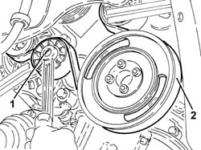
Applies to: engines: 1.9 JTD 16V; all production periods
1. Completely undo the bolts (1a) loosened previously and remove the power assisted steering pump pulley (1b).
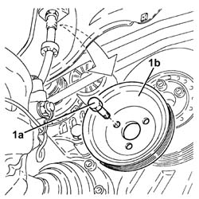
Applies to: engines: 1.9 JTD 16V; all production periods
Disconnect the rapid connectors for the inlet and outlet pipes from the heat exchanger and drain the power assisted steering fluid.
1. Undo the lower bolt for the engine oil dipstick pipe.
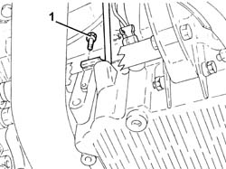
Applies to: engines: 1.9 JTD 16V; all production periods
1. Undo the bolts (1a) and remove the power unit reaction rod (1b).
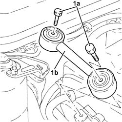
Applies to: engines: 1.9 JTD 16V; all production periods
1. Disconnect the electrical connection shown from the diesel electronic injection system control unit.
Name | Connector | |
|---|---|---|
1 | Engine management control unit |
2. Disconnect the front engine coupling.
Name | Connector | |
|---|---|---|
2 | Front/engine connection |
Release the electrical wiring from the securing bands and move it.
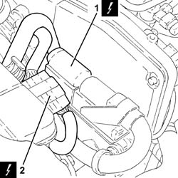
Applies to: engines: 1.9 JTD 16V; all production periods
1. Undo the upper bolt fixing the engine oil dipstick tube to the pressure pump mounting.
2. Remove the tube for the engine oil dipstick releasing it from the fastenings on the electrical wiring.
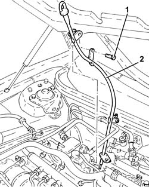
Applies to: engines: 1.9 JTD 16V; all production periods
1. Loosen the band and disconnect the supply pipe from the fluid reservoir to the power assisted steering pump, power assisted steering pump side.
2. Undo the connector (2a) and disconnect the supply pipe from the pump to the power assisted steering box (2b), power assisted steering box side.
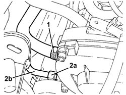
Applies to: engines: 1.9 JTD 16V; all production periods
1. Undo the bolts (1a) and remove the power assisted steering pulley protection (1b).
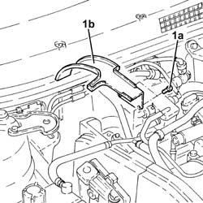
Applies to: engines: 1.9 JTD 16V; all production periods
1. Undo the upper alternator fixing bolt.
2. Undo the bolts (2a) and remove the rear alternator bracket (2b).
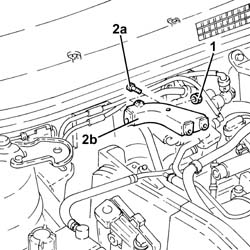
Applies to: engines: 1.9 JTD 16V; all production periods
1. Undo the bolts (1a) and remove the power assisted steering pump (1b).
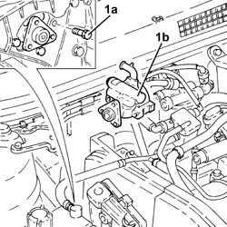
Applies to: engines: 1.9 JTD 16V; all production periods
Refitting
Removing1. Refit the power steering pump (1a) in its seating and tighten its bolts (1b) to the specified torque.
| Fastening | Component | Ø | Value (daNm) |
|---|---|---|---|---|
1b | Bolt | POWER STEERING PUMP | M8 | (Support side) 2.3 ÷ 2.8 |
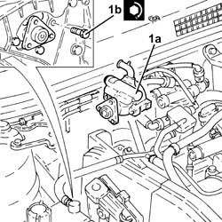
Applies to: engines: 1.9 JTD 16V; all production periods
Place the alternator rear mounting bracket back in its housing and secure it to the intermediate shaft support using the bolts.
Tighten the upper alternator bolts to the specified torque.
| Fastening | Component | Ø | Value (daNm) |
|---|---|---|---|---|
- | Bolt | ALTERNATOR ASSEMBLY | M10 | 4.5 ÷ 5.5 |
| Fastening | Component | Ø | Value (daNm) |
|---|---|---|---|---|
- | Bolt | ALTERNATOR ASSEMBLY | M12 | 6.3 ÷ 7.7 |
Place the power assisted steering pump pulley protection back in its housing and secure it using the bolts.
1. Connect the delivery pipe from pump to power steering box (1a), steering pump side, and tighten the connector (1b) to the specified torque.
| Fastening | Component | Ø | Value (daNm) |
|---|---|---|---|---|
1b | Connector | PIPE BTWN PUMP + POWER STEERING BOX | M16 | (Power assisted steering pump side) 4.5 ÷ 5.5 |
2. Connect the supply pipe from the fluid reservoir to the power assisted steering pump, pump side and tighten the band.
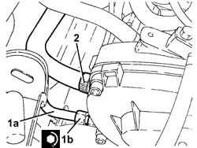
Applies to: engines: 1.9 JTD 16V; all production periods
Place the tube for the engine oil dipstick back in its housing, and secure it to the electrical wiring using the bands.
Tighten the upper bolt fixing the engine oil dipstick pipe to the pressure pump mounting.
Place the electrical wiring back in its seating and fix it to the bands.
Connect the front engine coupling.
Connect the electrical connection to the diesel electronic injection control unit.
1. Place the power unit reaction rod (1a) back in its housing and fix it tightening the bolts (1b) to the recommended torque.
| Fastening | Component | Ø | Value (daNm) |
|---|---|---|---|---|
1b | Bolt | REACTION ROD | M10 | 4.5 ÷ 5.5 |
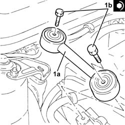
Applies to: engines: 1.9 JTD 16V; all production periods
Tighten the lower bolt fixing the engine oil dipstick pipe.
Connect the rapid connectors for the inlet and outlet pipes to the heat exchanger pipe.
Place the power assisted steering pump back in its housing and fix it without tightening the bolts.
Adjust the moving tensioner and place the engine components single drive belt back in its housing.
Tighten the power steering pump pulley bolts to the specified torque.
| Fastening | Component | Ø | Value (daNm) |
|---|---|---|---|---|
- | Bolt | POWER STEERING PUMP DRIVE PULLEY | M8 | (Power assisted steering pump side 23 28 |
Proceed with refitting
Op. 7055B91 RIGHT FRONT WHEEL ARCH LINER - R.R..
Proceed with refitting
Op. 7055B54 UNDER-ENGINE GUARD - R R.
Proceed with refitting
Op. 4450B04 RIGHT FRONT WHEEL R R.
Proceed with refitting
- 1016A10 sound-proofing cover - r + r
.
Proceed with refitting
Op. 0010T71 POWER STEERING FLUID CHECK LEVEL AND TOP UP IF NECESSARY.
Connect the negative (-) battery terminal
Remove the car from the ramps.
Topics linked from this page (14)
- 0010T71 POWER STEERING FLUID CHECK LEVEL AND TOP UP IF NECESSARY
- 1016A40 IGNITION COIL COVER ON CYLINDER HEAD- R+R
- 1076A70 HEAT SHIELD FOR LEFT CATALYTIC PRECONVERTER R R
- 1080B92 LEFT UPPER LAMBDA SENSOR R R
- 1092G10 SINGLE ENGINE BELT R R
- 4130B10 POWER STEERING FLUID RESEVOIR R R
- 4450B04 RIGHT FRONT WHEEL R R
- 7055B54 UNDER-ENGINE GUARD - R R
- 7055B64 LH OR RH REFLECTOR(ONE) ON REAR BUMPERS - R R
- 7055B66 ENGINE COMPARTMENT DUST SHIELD PROTECTION IN RIGHT FRONT WHEEL ARCH - R.R.
- 7055B91 RIGHT FRONT WHEEL ARCH LINER - R.R.
- A1B Battery ( BATTERY NEGATIVE )
- D4 Front/engine connection
- M10B Engine management control unit ( Connectors )